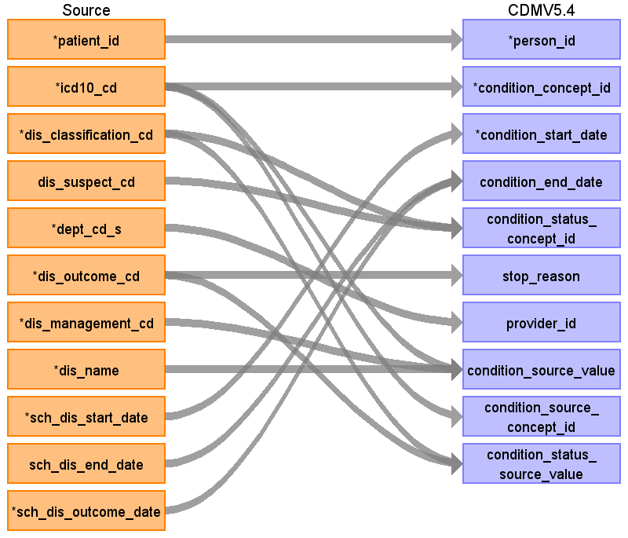

ターゲットテーブル:condition_occurrence
・当テーブルは PatientDisease、ObservationResult、PrescriptionData、InjectionDataなどから作成する
・各テーブルの 病名、検査値、薬剤名などを ATHENA Vocabularyを介したstandard conceptへの変換後、standard conceptのdomainが "Condition" で定義されているデータが格納される。
本項では、PatientDiseaseをもとに生成された、condition_occurrenceテーブルの各項目のとの出力結果の対応を記載する。
・concept変換元のソースコードはICD-10とし、ATHENA Vocabularyを介したstandard conceptへの変換を行う。

| Destination Field | Source field | Logic | Comment field |
|---|---|---|---|
| condition_occurrence_id | 一意の連番を設定する | ||
| person_id | patient_id | person.person_source_valueと結合してperson_idを取得・登録する |
|
| condition_concept_id | icd10_cd | Source_to_concept_map:
VocabID:RINCHU_DIAGCD, ATHENA_ICD10 DomainID:Condition |
ICD10コードをAthenaのconcept+concept_relationshipを介してStandard Vocabularyに変換する
ATHENAから生成したマッピングで対応できない病名コードは個別マッピングを行う 個別マッピングがあればそれを優先使用し、なければ自動マッピング生成テーブルを使用する |
| condition_start_date | sch_dis_start_date | 病名開始日をそのまま登録する |
|
| condition_start_datetime | （設定しない） | ||
| condition_end_date | sch_dis_outcome_date sch_dis_end_date |
COALESCE( -- OUTCOME_DATEを優先、なければEND_DATEを使用 ただし9999-12-31はNULLに変換する
NULLIF(sch_dis_outcome_date, '9999-12-31'::date), NULLIF(sch_dis_end_date, '9999-12-31'::date) ) AS end_date |
OUTCOME_DATEを優先、なければEND_DATEを使用 ただし9999-12-31はNULLに変換する
|
| condition_end_datetime | （設定しない） | ||
| condition_type_concept_id | 32817（EHR）固定とする | ||
| condition_status_concept_id | dis_classification_cd dis_suspect_cd |
Source_to_concept_map:
VocabID:RINCHU_DIS_STATUS DomainID:Condition Status |
主診断フラグおよび疑いフラグをもとにStandard Vocabularyに変換する
（疑いフラグ優先、次に主診断フラグ） |
| stop_reason | dis_outcome_cd | CASE
-- HL7表 0241-患者の結果 WHEN dis_outcome_cd = 'D' THEN dis_outcome_cd || '|死亡' WHEN dis_outcome_cd = 'R' THEN dis_outcome_cd || '|回復' WHEN dis_outcome_cd = 'N' THEN dis_outcome_cd || '|回復せず/変わらない' WHEN dis_outcome_cd = 'W' THEN dis_outcome_cd || '|悪化' WHEN dis_outcome_cd = 'S' THEN dis_outcome_cd || '|後遺症' WHEN dis_outcome_cd = 'F' THEN dis_outcome_cd || '|完全に回復した' WHEN dis_outcome_cd = 'U' THEN dis_outcome_cd || '|未知' -- JHSD表 0006-転帰区分 WHEN dis_outcome_cd = 'I' THEN dis_outcome_cd || '|中止' WHEN dis_outcome_cd = 'M' THEN dis_outcome_cd || '|寛解' WHEN dis_outcome_cd = 'C' THEN dis_outcome_cd || '|継続' WHEN dis_outcome_cd = 'O' THEN dis_outcome_cd || '|その他' ELSE NULL END AS stop_reason, |
転帰区分|転帰名称の形式に編集して判読可能な値として登録する |
| provider_id | dept_cd_s | 当該標準診療科コードを示すprovider_idを取得して登録する |
|
| visit_occurrence_id | （設定しない） | ||
| visit_detail_id | （設定しない） | ||
| condition_source_value | dis_management_cd icd10_cd dis_name |
COALESCE(icd10_cd, '') || '|' || COALESCE(dis_management_cd, '') || '|' || COALESCE(dis_name, '') |
ICD10コード|病名管理番号|病名表記の形式に編集して判読可能な値として登録する |
| condition_source_concept_id | icd10_cd | Source_to_concept_map:
VocabID:RINCHU_DIAGCD, ATHENA_ICD10 DomainID:Condition |
ICD10コードをAthenaのconceptを介してconcept_idに変換する |
| condition_status_source_value | dis_outcome_cd dis_classification_cd |
COALESCE(dis_classification_cd, '') || '|' || COALESCE(dis_suspect_cd, '') | 主診断フラグ|疑いフラグの形式に編集してどちらの値も判読可能な値として登録する |